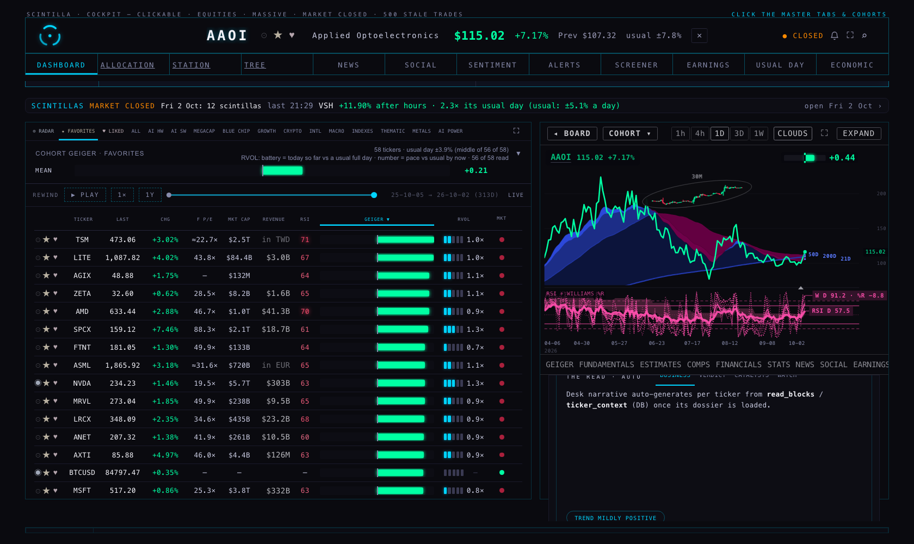
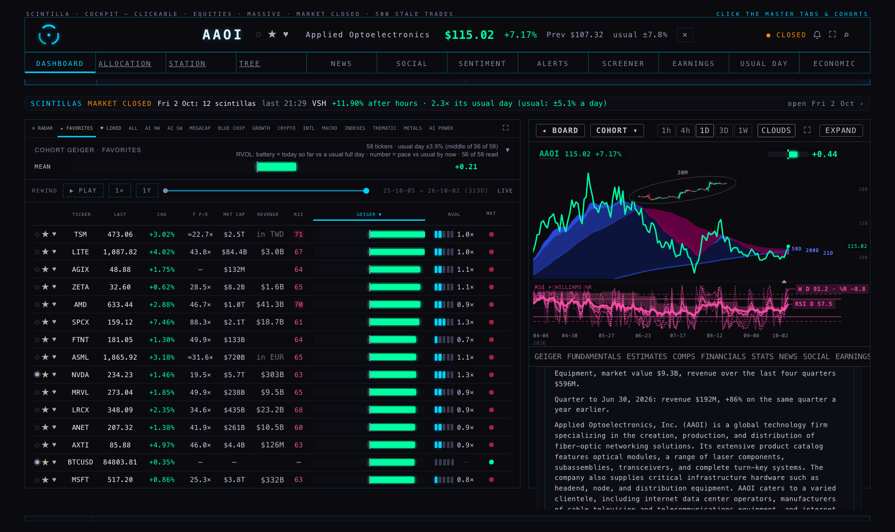
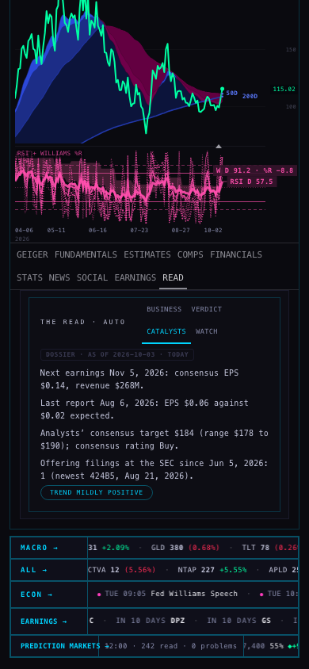
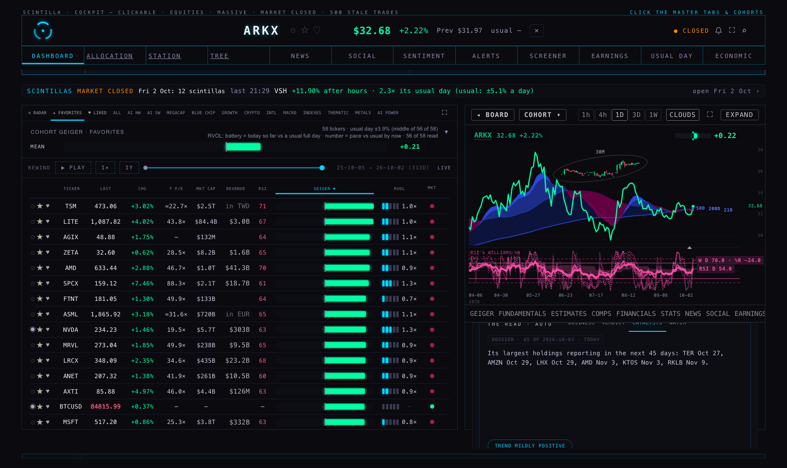

3 Oct 2026 · every served name (590) on every surface (31) · data read 2026-10-03 16:28Z · the real page checked headless for 83 names
After = projected: the same checks with the staged loads laid over today's reads. Nothing is applied until the coordinator runs the loads. * every surface a job can fill is filled; left aside are blanks that are right by nature (a loss-maker has no P/E; a fund has no statements sheet) and the three things no load can fix (the seven widths' pass, the stopped X feed, a researched dossier).
| surface | OK | EMPTY | PLACEHOLDER | ERROR |
|---|---|---|---|---|
| the name has a row on its cohort board | 590 | 0 | 0 | 0 |
| LAST | 590 | 0 | 0 | 0 |
| CHG % and the previous close | 590 | 0 | 0 | 0 |
| F P/E | 525 | 65 | 0 | 0 |
| MKT CAP | 525 → 526 | 65 → 64 | 0 | 0 |
| REVENUE | 516 → 585 | 74 → 5 | 0 | 0 |
| RSI | 589 | 0 | 0 | 1 |
| GEIGER | 590 | 0 | 0 | 0 |
| RVOL | 590 | 0 | 0 | 0 |
| MKT (trading-state dot) | 590 | 0 | 0 | 0 |
| the chart on all 24 widths (1m … 12M) | 0 | 0 | 0 | 590 |
| Geiger 7 rungs | 590 | 0 | 0 | 0 |
| previous close | 589 | 0 | 0 | 1 |
| GEIGER tab | 589 | 0 | 0 | 1 |
| FUNDAMENTALS tab (Station fundamentals shell) | 384 → 453 | 206 → 137 | 0 | 0 |
| ESTIMATES tab (analysts) | 525 | 65 | 0 | 0 |
| COMPS tab | 518 | 0 | 0 | 72 |
| FINANCIALS tab (HOLDINGS for a fund) | 385 → 515 | 205 → 75 | 0 | 0 |
| FINANCIALS → CAPITAL | 456 → 525 | 134 → 65 | 0 | 0 |
| STATS tab | 525 → 526 | 65 → 64 | 0 | 0 |
| NEWS tab | 524 | 66 | 0 | 0 |
| SOCIAL tab | 0 | 0 | 0 | 590 |
| EARNINGS tab (company) | 523 → 524 | 67 → 66 | 0 | 0 |
| READ → BUSINESS | 191 → 526 | 0 | 399 → 64 | 0 |
| READ → VERDICT | 590 | 0 | 0 | 0 |
| READ → CATALYSTS | 191 → 522 | 0 | 399 → 68 | 0 |
| READ → WATCH | 191 → 526 | 0 | 399 → 64 | 0 |
| READ → the dossier and its date | 7 → 335 | 392 → 64 | 0 | 191 |
| EARNINGS room (the calendar) | 587 → 589 | 3 → 1 | 0 | 0 |
| NEWS room (the name's cohort tab) | 524 | 66 | 0 | 0 |
| ALERTS room | 0 | 0 | 590 | 0 |




● OK · ○ EMPTY · ◌ developer text · ✕ stale or wrong · before › after. Hover a cell for the reason.
| name | LAST | CHG | F P/E | MCAP | REV | RSI | GEIG | RVOL | 24 W | PREV | G TAB | FUND | EST | COMPS | FIN | CAP | STATS | NEWS | SOC | ERN | R·BUS | R·VER | R·CAT | R·WAT | DOSS | CAL | NEWS RM | |
|---|---|---|---|---|---|---|---|---|---|---|---|---|---|---|---|---|---|---|---|---|---|---|---|---|---|---|---|---|
| AAOI | co. | ● | ● | ● | ● | ● | ● | ● | ● | ✕ | ● | ● | ● | ● | ● | ● | ● | ● | ● | ✕ | ● | ◌›● | ● | ◌›● | ◌›● | ○›● | ● | ● |
| ACHR | co. | ● | ● | ○ | ● | ● | ● | ● | ● | ✕ | ● | ● | ● | ● | ● | ● | ● | ● | ● | ✕ | ● | ◌›● | ● | ◌›● | ◌›● | ○›● | ● | ● |
| ALB | co. | ● | ● | ● | ● | ● | ● | ● | ● | ✕ | ● | ● | ● | ● | ● | ● | ● | ● | ● | ✕ | ● | ◌›● | ● | ◌›● | ◌›● | ○›● | ● | ● |
| AMKR | co. | ● | ● | ● | ● | ● | ● | ● | ● | ✕ | ● | ● | ● | ● | ● | ● | ● | ● | ● | ✕ | ● | ◌›● | ● | ◌›● | ◌›● | ○›● | ● | ● |
| ARKX | fund | ● | ● | ● | ● | ● | ● | ● | ● | ✕ | ● | ● | ○ | ● | ● | ○›● | ● | ● | ● | ✕ | ● | ◌›● | ● | ◌›● | ◌›● | ○›● | ● | ● |
| AVAV | co. | ● | ● | ● | ● | ● | ● | ● | ● | ✕ | ● | ● | ● | ● | ● | ● | ● | ● | ● | ✕ | ● | ◌›● | ● | ◌›● | ◌›● | ○›● | ● | ● |
| BKSY | co. | ● | ● | ○ | ● | ● | ● | ● | ● | ✕ | ● | ● | ● | ● | ● | ● | ● | ● | ● | ✕ | ● | ◌›● | ● | ◌›● | ◌›● | ○›● | ● | ● |
| BOTZ | fund | ● | ● | ● | ● | ● | ● | ● | ● | ✕ | ● | ● | ○ | ● | ● | ○›● | ● | ● | ● | ✕ | ● | ◌›● | ● | ◌›● | ◌›● | ○›● | ● | ● |
| BTDR | co. | ● | ● | ○ | ● | ● | ● | ● | ● | ✕ | ● | ● | ● | ● | ● | ● | ● | ● | ● | ✕ | ● | ◌›● | ● | ◌›● | ◌›● | ○›● | ● | ● |
| CIBR | fund | ● | ● | ● | ● | ● | ● | ● | ● | ✕ | ● | ● | ○ | ● | ● | ○›● | ● | ● | ● | ✕ | ● | ◌›● | ● | ◌›● | ◌›● | ○›● | ● | ● |
| COHR | co. | ● | ● | ● | ● | ● | ● | ● | ● | ✕ | ● | ● | ● | ● | ● | ● | ● | ● | ● | ✕ | ● | ◌›● | ● | ◌›● | ◌›● | ○›● | ● | ● |
| CRML | co. | ● | ● | ○ | ● | ● | ● | ● | ● | ✕ | ● | ● | ● | ● | ● | ● | ● | ● | ● | ✕ | ● | ◌›● | ● | ◌›● | ◌›● | ○›● | ● | ● |
| FDN | fund | ● | ● | ● | ● | ● | ● | ● | ● | ✕ | ● | ● | ○ | ● | ● | ○›● | ● | ● | ● | ✕ | ● | ◌›● | ● | ◌›● | ◌›● | ○›● | ● | ● |
| FINX | fund | ● | ● | ● | ● | ● | ● | ● | ● | ✕ | ● | ● | ○ | ● | ● | ○›● | ● | ● | ● | ✕ | ● | ◌›● | ● | ◌›● | ◌›● | ○›● | ● | ● |
| GLW | co. | ● | ● | ● | ● | ● | ● | ● | ● | ✕ | ● | ● | ● | ● | ● | ● | ● | ● | ● | ✕ | ● | ◌›● | ● | ◌›● | ◌›● | ○›● | ● | ● |
| HIVE | co. | ● | ● | ○ | ● | ● | ● | ● | ● | ✕ | ● | ● | ● | ● | ● | ● | ● | ● | ● | ✕ | ● | ◌›● | ● | ◌›● | ◌›● | ○›● | ● | ● |
| HUBB | co. | ● | ● | ● | ● | ● | ● | ● | ● | ✕ | ● | ● | ● | ● | ● | ● | ● | ● | ● | ✕ | ● | ◌›● | ● | ◌›● | ◌›● | ○›● | ● | ● |
| IGV | fund | ● | ● | ● | ● | ● | ● | ● | ● | ✕ | ● | ● | ○ | ● | ● | ○›● | ● | ● | ● | ✕ | ● | ◌›● | ● | ◌›● | ◌›● | ○›● | ● | ● |
| IHI | fund | ● | ● | ● | ● | ● | ● | ● | ● | ✕ | ● | ● | ○ | ● | ● | ○›● | ● | ● | ● | ✕ | ● | ◌›● | ● | ◌›● | ◌›● | ○›● | ● | ● |
| ITA | fund | ● | ● | ● | ● | ● | ● | ● | ● | ✕ | ● | ● | ○ | ● | ● | ○›● | ● | ● | ● | ✕ | ● | ◌›● | ● | ◌›● | ◌›● | ○›● | ● | ● |
| ITB | fund | ● | ● | ● | ● | ● | ● | ● | ● | ✕ | ● | ● | ○ | ● | ● | ○›● | ● | ● | ● | ✕ | ● | ◌›● | ● | ◌›● | ◌›● | ○›● | ● | ● |
| IYT | fund | ● | ● | ● | ● | ● | ● | ● | ● | ✕ | ● | ● | ○ | ● | ● | ○›● | ● | ● | ● | ✕ | ● | ◌›● | ● | ◌›● | ◌›● | ○›● | ● | ● |
| JETS | fund | ● | ● | ● | ● | ● | ● | ● | ● | ✕ | ● | ● | ○ | ● | ● | ○›● | ● | ● | ● | ✕ | ● | ◌›● | ● | ◌›● | ◌›● | ○›● | ● | ● |
| KIE | fund | ● | ● | ● | ● | ● | ● | ● | ● | ✕ | ● | ● | ○ | ● | ● | ○›● | ● | ● | ● | ✕ | ● | ◌›● | ● | ◌›● | ◌›● | ○›● | ● | ● |
| KRE | fund | ● | ● | ● | ● | ● | ● | ● | ● | ✕ | ● | ● | ○ | ● | ● | ○›● | ● | ● | ● | ✕ | ● | ◌›● | ● | ◌›● | ◌›● | ○›● | ● | ● |
| KTOS | co. | ● | ● | ● | ● | ● | ● | ● | ● | ✕ | ● | ● | ● | ● | ● | ● | ● | ● | ● | ✕ | ● | ◌›● | ● | ◌›● | ◌›● | ○›● | ● | ● |
| LEU | co. | ● | ● | ● | ● | ● | ● | ● | ● | ✕ | ● | ● | ● | ● | ● | ● | ● | ● | ● | ✕ | ● | ◌›● | ● | ◌›● | ◌›● | ○›● | ● | ● |
| LIT | fund | ● | ● | ● | ● | ● | ● | ● | ● | ✕ | ● | ● | ○ | ● | ● | ○›● | ● | ● | ● | ✕ | ● | ◌›● | ● | ◌›● | ◌›● | ○›● | ● | ● |
| LUNR | co. | ● | ● | ○ | ● | ● | ● | ● | ● | ✕ | ● | ● | ● | ● | ● | ● | ● | ● | ● | ✕ | ● | ◌›● | ● | ◌›● | ◌›● | ○›● | ● | ● |
| NOK | co. | ● | ● | ● | ● | ● | ● | ● | ● | ✕ | ● | ● | ● | ● | ● | ● | ● | ● | ● | ✕ | ● | ◌›● | ● | ◌›● | ◌›● | ○›● | ● | ● |
| NVTS | co. | ● | ● | ○ | ● | ● | ● | ● | ● | ✕ | ● | ● | ● | ● | ● | ● | ● | ● | ● | ✕ | ● | ◌›● | ● | ◌›● | ◌›● | ○›● | ● | ● |
| OUST | co. | ● | ● | ○ | ● | ● | ● | ● | ● | ✕ | ● | ● | ● | ● | ● | ● | ● | ● | ● | ✕ | ● | ◌›● | ● | ◌›● | ◌›● | ○›● | ● | ● |
| PAVE | fund | ● | ● | ● | ● | ● | ● | ● | ● | ✕ | ● | ● | ○ | ● | ● | ○›● | ● | ● | ● | ✕ | ● | ◌›● | ● | ◌›● | ◌›● | ○›● | ● | ● |
| PEJ | fund | ● | ● | ● | ● | ● | ● | ● | ● | ✕ | ● | ● | ○ | ● | ● | ○›● | ● | ● | ● | ✕ | ● | ◌›● | ● | ◌›● | ◌›● | ○›● | ● | ● |
| PL | co. | ● | ● | ○ | ● | ● | ● | ● | ● | ✕ | ● | ● | ● | ● | ● | ● | ● | ● | ● | ✕ | ● | ◌›● | ● | ◌›● | ◌›● | ○›● | ● | ● |
| POET | co. | ● | ● | ○ | ● | ● | ● | ● | ● | ✕ | ● | ● | ● | ● | ● | ● | ● | ● | ● | ✕ | ● | ◌›● | ● | ◌›● | ◌›● | ○›● | ● | ● |
| QTUM | fund | ● | ● | ● | ● | ● | ● | ● | ● | ✕ | ● | ● | ○ | ● | ● | ○›● | ● | ● | ● | ✕ | ● | ◌›● | ● | ◌›● | ◌›● | ○›● | ● | ● |
| RDW | co. | ● | ● | ○ | ● | ● | ● | ● | ● | ✕ | ● | ● | ● | ● | ● | ● | ● | ● | ● | ✕ | ● | ◌›● | ● | ◌›● | ◌›● | ○›● | ● | ● |
| REMX | fund | ● | ● | ● | ● | ● | ● | ● | ● | ✕ | ● | ● | ○ | ● | ● | ○›● | ● | ● | ● | ✕ | ● | ◌›● | ● | ◌›● | ◌›● | ○›● | ● | ● |
| REZ | fund | ● | ● | ● | ● | ● | ● | ● | ● | ✕ | ● | ● | ○ | ● | ● | ○›● | ● | ● | ● | ✕ | ● | ◌›● | ● | ◌›● | ◌›● | ○›● | ● | ● |
| RIOT | co. | ● | ● | ○ | ● | ● | ● | ● | ● | ✕ | ● | ● | ● | ● | ● | ● | ● | ● | ● | ✕ | ● | ◌›● | ● | ◌›● | ◌›● | ○›● | ● | ● |
| SATL | co. | ● | ● | ○ | ● | ● | ● | ● | ● | ✕ | ● | ● | ● | ● | ● | ● | ● | ● | ● | ✕ | ● | ◌›● | ● | ◌›● | ◌›● | ○›● | ● | ● |
| SERV | co. | ● | ● | ○ | ● | ● | ● | ● | ● | ✕ | ● | ● | ● | ● | ● | ● | ● | ● | ● | ✕ | ● | ◌›● | ● | ◌›● | ◌›● | ○›● | ● | ● |
| SIDU | co. | ● | ● | ○ | ● | ● | ● | ● | ● | ✕ | ● | ● | ● | ● | ● | ● | ● | ● | ● | ✕ | ● | ◌›● | ● | ◌›● | ◌›● | ○›● | ● | ● |
| SPIR | co. | ● | ● | ○ | ● | ● | ● | ● | ● | ✕ | ● | ● | ● | ● | ✕ | ● | ● | ● | ● | ✕ | ● | ◌›● | ● | ◌›● | ◌›● | ○›● | ● | ● |
| SQM | co. | ● | ● | ● | ● | ● | ● | ● | ● | ✕ | ● | ● | ● | ● | ● | ● | ● | ● | ● | ✕ | ● | ◌›● | ● | ◌›● | ◌›● | ○›● | ● | ● |
| STM | co. | ● | ● | ● | ● | ● | ● | ● | ● | ✕ | ● | ● | ● | ● | ● | ● | ● | ● | ● | ✕ | ● | ◌›● | ● | ◌›● | ◌›● | ○›● | ● | ● |
| SYM | co. | ● | ● | ● | ● | ● | ● | ● | ● | ✕ | ● | ● | ● | ● | ● | ● | ● | ● | ● | ✕ | ● | ◌›● | ● | ◌›● | ◌›● | ○›● | ● | ● |
| TAN | fund | ● | ● | ● | ● | ● | ● | ● | ● | ✕ | ● | ● | ○ | ● | ● | ○›● | ● | ● | ● | ✕ | ● | ◌›● | ● | ◌›● | ◌›● | ○›● | ● | ● |
| TECK | co. | ● | ● | ● | ● | ● | ● | ● | ● | ✕ | ● | ● | ● | ● | ● | ● | ● | ● | ● | ✕ | ● | ◌›● | ● | ◌›● | ◌›● | ○›● | ● | ● |
| TSEM | co. | ● | ● | ● | ● | ● | ● | ● | ● | ✕ | ● | ● | ● | ● | ● | ● | ● | ● | ● | ✕ | ● | ◌›● | ● | ◌›● | ◌›● | ○›● | ● | ● |
| URA | fund | ● | ● | ● | ● | ● | ● | ● | ● | ✕ | ● | ● | ○ | ● | ● | ○›● | ● | ● | ● | ✕ | ● | ◌›● | ● | ◌›● | ◌›● | ○›● | ● | ● |
| UUUU | co. | ● | ● | ● | ● | ● | ● | ● | ● | ✕ | ● | ● | ● | ● | ● | ● | ● | ● | ● | ✕ | ● | ◌›● | ● | ◌›● | ◌›● | ○›● | ● | ● |
| VSH | co. | ● | ● | ● | ● | ● | ● | ● | ● | ✕ | ● | ● | ● | ● | ● | ● | ● | ● | ● | ✕ | ● | ◌›● | ● | ◌›● | ◌›● | ○›● | ● | ● |
| XBI | fund | ● | ● | ● | ● | ● | ● | ● | ● | ✕ | ● | ● | ○ | ● | ● | ○›● | ● | ● | ● | ✕ | ● | ◌›● | ● | ◌›● | ◌›● | ○›● | ● | ● |
| XSD | fund | ● | ● | ● | ● | ● | ● | ● | ● | ✕ | ● | ● | ○ | ● | ● | ○›● | ● | ● | ● | ✕ | ● | ◌›● | ● | ◌›● | ◌›● | ○›● | ● | ● |
Every one of the 56 has its price, change, previous close, Geiger on 7 of 7 rungs, RVOL, news and a board row. Before: all 56 showed the developer line on READ → BUSINESS, CATALYSTS and WATCH; 23 funds had empty HOLDINGS; 4 had no next earnings date in the calendar or an empty comps / capital box. After the loads, 55 are complete (39 of them keep a blank that is right by nature: a loss-maker's F P/E, a fund's statements sheet). Still short: SPIR — COMPS (the tab prints "the comparable set could not be built" — the live rule keeps no peer)
| surface | Bookmark names (27 Sep) (56) | 29 Sep names (104) | Original names (364) | Geiger-only funds (66) |
|---|---|---|---|---|
| the name has a row on its cohort board | 0 | 0 | 0 | 0 |
| LAST | 0 | 0 | 0 | 0 |
| CHG % and the previous close | 0 | 0 | 0 | 0 |
| F P/E | 16 | 12 | 37 | 0 |
| MKT CAP | 0 | 1 → 0 | 0 | 64 |
| REVENUE | 0 | 71 → 2 | 3 | 0 |
| RSI | 0 | 1 | 0 | 0 |
| GEIGER | 0 | 0 | 0 | 0 |
| RVOL | 0 | 0 | 0 | 0 |
| MKT (trading-state dot) | 0 | 0 | 0 | 0 |
| the chart on all 24 widths (1m … 12M) | 56 | 104 | 364 | 66 |
| Geiger 7 rungs | 0 | 0 | 0 | 0 |
| previous close | 0 | 0 | 1 | 0 |
| GEIGER tab | 0 | 1 | 0 | 0 |
| FUNDAMENTALS tab (Station fundamentals shell) | 23 | 70 → 1 | 47 | 66 |
| ESTIMATES tab (analysts) | 0 | 1 | 0 | 64 |
| COMPS tab | 1 | 4 | 3 | 64 |
| FINANCIALS tab (HOLDINGS for a fund) | 23 → 0 | 70 → 1 | 46 → 8 | 66 |
| FINANCIALS → CAPITAL | 0 | 70 → 1 | 0 | 64 |
| STATS tab | 0 | 1 → 0 | 0 | 64 |
| NEWS tab | 0 | 0 | 0 | 66 |
| SOCIAL tab | 56 | 104 | 364 | 66 |
| EARNINGS tab (company) | 0 | 1 | 2 → 1 | 64 |
| READ → BUSINESS | 56 → 0 | 104 → 0 | 175 → 0 | 64 |
| READ → VERDICT | 0 | 0 | 0 | 0 |
| READ → CATALYSTS | 56 → 0 | 104 → 0 | 175 → 4 | 64 |
| READ → WATCH | 56 → 0 | 104 → 0 | 175 → 0 | 64 |
| READ → the dossier and its date | 56 → 0 | 104 → 0 | 357 → 189 | 66 |
| EARNINGS room (the calendar) | 0 | 1 → 0 | 2 → 1 | 0 |
| NEWS room (the name's cohort tab) | 0 | 0 | 0 | 66 |
| ALERTS room | 56 | 104 | 364 | 66 |
| what | how many | load | from |
|---|---|---|---|
| READ dossiers | 335 names (all 56 bookmark names among them) | supabase/migrations/20261003_f1_facts_dossiers.sql | BUSINESS, CATALYSTS and WATCH from stored facts; 7 empty dossier shells filled only while still empty |
| Fund holdings | 61 funds · 12,757 lines | supabase/migrations/20261003_f1_etf_holdings.sql | FMP etf/holdings, read on a throw-away machine |
| Statements (FUNDAMENTALS, FINANCIALS, CAPITAL, REVENUE) | 69 companies | supabase/migrations/20261003_f1_statements_trigger.sql | the loader's own run for exactly these names; FMP answers for every one |
| Next earnings date | MOG.A 2026-11-20, NKE 2026-12-17 | supabase/migrations/20261003_f1_earnings_next.sql | none of them in the suppression archive |
| MOG.A | FMP symbol MOG-A + a profile row | supabase/migrations/20261003_f1_mog_a.sql | its STATS, MKT CAP and READ fill; statements follow the loader fix |
| what | names | why |
|---|---|---|
| The seven chart widths nothing refreshes (2m, 45m, 8h, 2D, 3M, 6M, 12M) | all 590 | They stop on the day each name was pulled (18 Aug, 27 Sep or 29 Sep). The daily pass is written (provider scripts/no-tail-widths-pass.mjs) but not run: it rewrites stored bars for every name and re-applies the history floors, which the coordinator should run and arm as a schedule (the command is in the provider runbook). |
| SOCIAL prints STALE on every name | all 590 | The X feed's newest post is 2026-09-25 22:29Z — the X collector has not published since the screen-capture browser was stopped on 24–25 Sep. No data load can fix it; the collector has to run again (headless). |
| READ → the dossier is a facts dossier, not a researched one | 335 names | The words are composed from stored facts only (no model). The 191 older dossiers are 70–110 days old and nothing refreshes them; a researched dossier needs the draft dossier agent, which would call a paid model API. |
| The 64 Geiger-only funds | 64 | By their tier they get no profile, news, statements or dossier, so the company tabs show company tables of "not stored" lines and "could not be built". Alan (3 Oct): "66 Geiger-only names off the Hub" — the served-set lane (U5) decides; nothing was loaded for them. |
| FUNDAMENTALS for every fund | all funds | The Station fundamentals shell has no fund view: it draws a company sheet of "not stored" lines. A design change, not data. |
| ALERTS | all 590 | A parked room for every name. |
| Words on screen that are table names | 83 of 83 sampled | READ's developer line, and inside panels: analyst-revisions job, company_releases, balance_history, cashflow_history, etf_holdings, fundamentals_history, read_blocks, ticker_context, youtube_videos. Alan asked for these to leave the panels; a text change is outside this brief. |
| MOG.A | 1 | Its RSI / Williams %R come from FMP's indicator export, which still asks for "MOG.A" (last reading 2 May 2024); its stored analyst notes are from 2024. The F1 symbol fix covers statements, estimates and earnings, not the indicator export. |
| Funds FMP gives no holdings list for | 8 | GLD, SLV, USO (commodities) and TLT, IEF, HYG, LQD, SHY (bonds): HOLDINGS stays empty. |
| Companies whose comps set cannot be built | 8 | AMRC, BTSG, BYND, CCJ, HIMS, MOG.A, SNX, SPIR: the live C4 rule keeps no peer; C5 (pushed, not live) seats most of them. |
| F P/E blank by rule or by nature | 65 | Loss-making names (no P/E exists) and non-USD reporters (the board does not convert currencies). |
| loader | what it did | now (on the branch) |
|---|---|---|
| fmp-fundamentals · fmp-analyst · fmp-events | walked the list in slices (10 names per 6 h ≈ a 13-day lap for statements; 30 per 4–6 h ≈ 3 days) | a company with nothing yet goes first, a few a run, rotated; the slice size and the overrides are unchanged |
| the same three | asked FMP for the Hub ticker, ignoring the stored FMP spelling (MOG.A never answered) | they use tickers.fmp_symbol |
| fund holdings | no job wrote them after 22 Jul | fmp-backfill?job=etf, weekly; a fund's list is replaced only when FMP answers with one |
| dossiers | no job writes them | dossier-facts, hourly: a facts dossier for any full name with none; refreshes only its own rows |
| the seven widths | no scheduled pass | no-tail-widths-pass.mjs (provider), to run daily on its own scheduled machine |
1 of 31 surfaces OK today (the trading-state dot). 19 empty, 6 stale or wrong, 5 developer text — each line names the step that fills it. Run it again after each step of the sitting; it is done when only SOCIAL (the X feed), ALERTS and the dossier's depth remain.
| state | surface | today, and what fills it |
|---|---|---|
| ○ EMPTY | the name has a row on its cohort board | not in the served universe (/universe 590) → admission sitting (builder + S1–S11) |
| ✕ ERROR | LAST | quote state NOT_OBSERVED_BY_STREAM → bar service quotes (automatic once served) |
| ✕ ERROR | CHG % and the previous close | previous close PREVIOUS_CLOSE_NOT_SETTLED → geiger-publisher settled close |
| ○ EMPTY | F P/E | no forward EPS (analyst_estimates future rows: 0) → fmp-analyst |
| ○ EMPTY | MKT CAP | no company_profile row → fmp-backfill?job=profile |
| ○ EMPTY | REVENUE | no fundamentals row → fmp-fundamentals |
| ○ EMPTY | RSI | no FMP RSI row → fmp-indicator-export |
| ○ EMPTY | GEIGER | not in /geiger → admission sitting (S2 Geiger runner) |
| ○ EMPTY | RVOL | no board_volume row → minute-bar writer |
| ● OK | MKT (trading-state dot) | clock |
| ○ EMPTY | the chart on all 24 widths (1m … 12M) | 24 of 24 widths missing: 1m 2m 3m 5m 10m 15 30 45 60 120 180 240 6h 8h 12h D 2D 3D W 2W M 3mo 6mo 12mo → admission P2 pull |
| ○ EMPTY | Geiger 7 rungs | not in /geiger → admission sitting (S2 Geiger runner) |
| ✕ ERROR | previous close | previous close PREVIOUS_CLOSE_NOT_SETTLED / ? → geiger-publisher settled close |
| ○ EMPTY | GEIGER tab | not in /geiger → admission sitting (S2 Geiger runner) |
| ○ EMPTY | FUNDAMENTALS tab (Station fundamentals shell) | fundamentals_history: 0 FY, 0 quarters → fmp-fundamentals |
| ○ EMPTY | ESTIMATES tab (analysts) | future estimates 0, price target none, ratings none → fmp-analyst |
| ✕ ERROR | COMPS tab | the tab prints "the comparable set could not be built" — SKHY has no profile (no company_profile row) → fmp-backfill?job=profile |
| ○ EMPTY | FINANCIALS tab (HOLDINGS for a fund) | FY income 0, balance 0, cash flow 0 → fmp-fundamentals |
| ○ EMPTY | FINANCIALS → CAPITAL | no quarterly cash flow → fmp-fundamentals |
| ○ EMPTY | STATS tab | no company_profile row → fmp-backfill?job=profile |
| ○ EMPTY | NEWS tab | no headline in 30 days: "No recent headlines" → news-feed |
| ✕ ERROR | SOCIAL tab | the page prints STALE: the X feed's newest post is 2026-09-25 22:29Z (138 X posts · 0 YouTube videos / 30 d) → X collector (stopped) |
| ○ EMPTY | EARNINGS tab (company) | reported 0, next none → fmp-events |
| ◌ PLACEHOLDER | READ → BUSINESS | the developer line "Desk narrative auto-generates per ticker from read_blocks / ticker_context (DB) once its dossier is loaded." (no read_blocks row and no dossier) → dossier (ticker_context) → read-engine |
| ◌ PLACEHOLDER | READ → VERDICT | the developer line "Desk narrative auto-generates per ticker from read_blocks / ticker_context (DB) once its dossier is loaded." (no read_blocks row and no dossier) → read-engine (writes a verdict only for a name that has read_blocks or a dossier) |
| ◌ PLACEHOLDER | READ → CATALYSTS | the developer line "Desk narrative auto-generates per ticker from read_blocks / ticker_context (DB) once its dossier is loaded." (no read_blocks row and no dossier) → dossier (ticker_context) → read-engine |
| ◌ PLACEHOLDER | READ → WATCH | the developer line "Desk narrative auto-generates per ticker from read_blocks / ticker_context (DB) once its dossier is loaded." (no read_blocks row and no dossier) → dossier (ticker_context) → read-engine |
| ○ EMPTY | READ → the dossier and its date | no ticker_context row (no dossier) → no dossier writer runs (draft protocol, paid model API) |
| ✕ ERROR | EARNINGS room (the calendar) | not in public.cohorts: the calendar drops its rows → cohorts row (admission) |
| ○ EMPTY | NEWS room (the name's cohort tab) | no headline in 30 days → news-feed |
| ◌ PLACEHOLDER | ALERTS room | ALERTS is a parked room for every name → product decision |
Every name the Hub serves today (590: 524 with the full treatment, 66 Geiger-only) checked on 31 surfaces: the board row and its columns, the chart's 24 widths, the Geiger rungs and previous close, every company tab (GEIGER, FUNDAMENTALS, ESTIMATES, COMPS, FINANCIALS with CAPITAL, STATS, NEWS, SOCIAL, EARNINGS, the four READ sections and the dossier's date), the EARNINGS calendar, the NEWS room and ALERTS. Each cell is OK, EMPTY, PLACEHOLDER (developer text or a stub) or ERROR (stale or wrong), with the reason and the job that fills it.
control/ADMISSION_CHECKLIST.json and scripts/admission-checklist.mjs in the provider repo (branch provider/f1-full-treatment-20261003). It reads the chart API (/universe, /quotes, /geiger, /candles) and the Hub database through the page's own public read endpoint — the same rows and rules the page gets — plus the Hub's X feed. GET only; no key.supabase/migrations/20261003_f1_*, each with its rollback beside it.--overlay data/staged-20261003.json); the page previews serve the staged row to the deployed page for one read and change nothing.--all once they are applied.